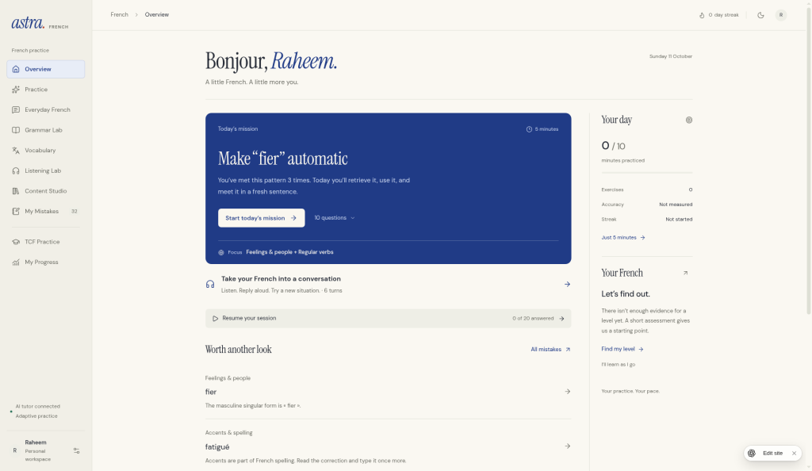
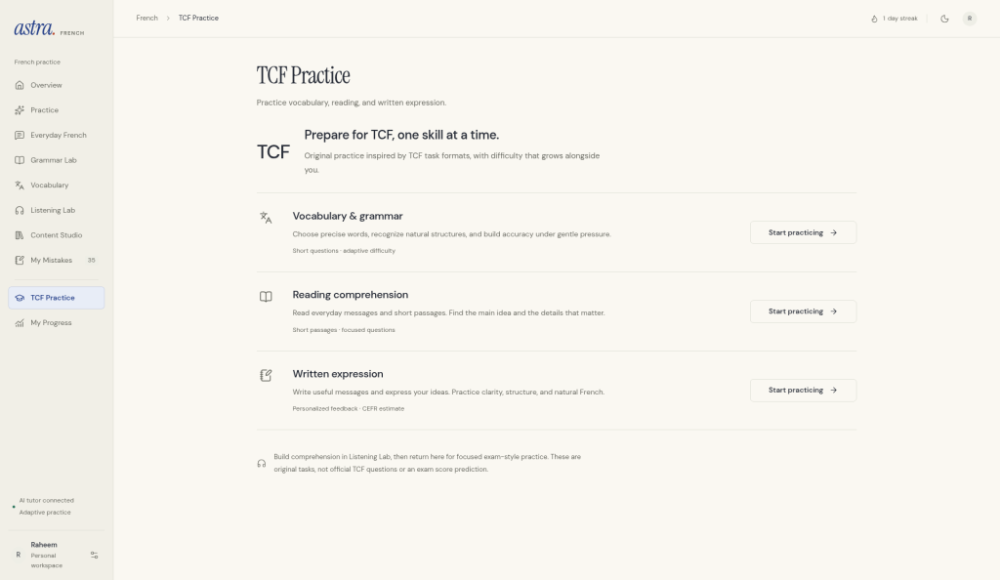
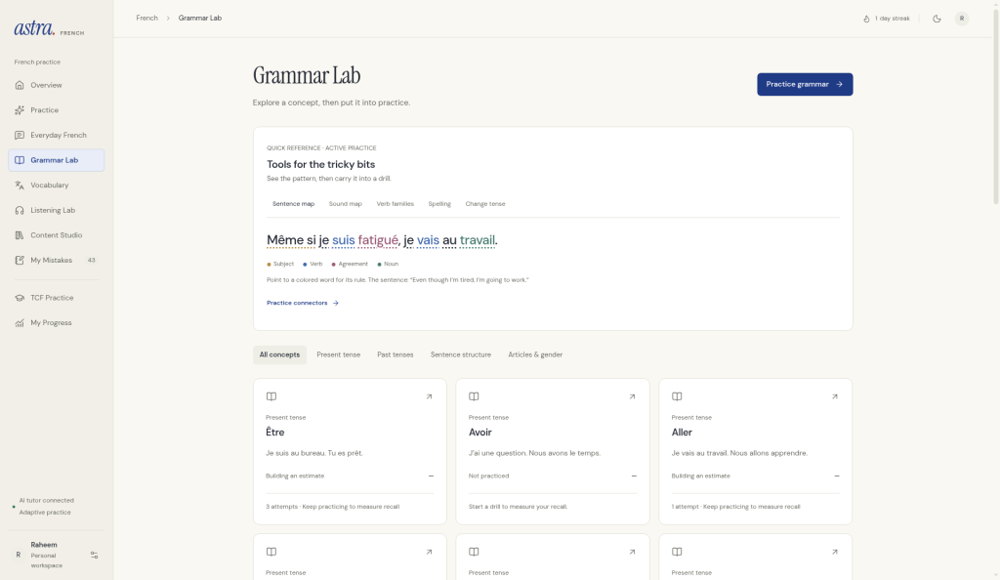
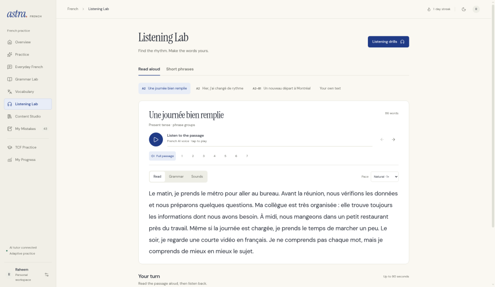
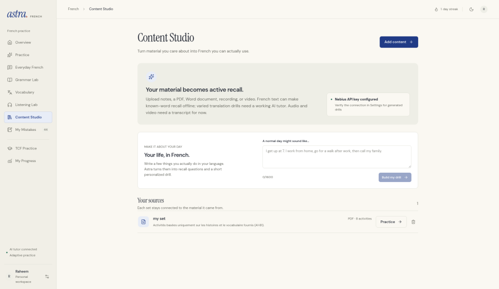
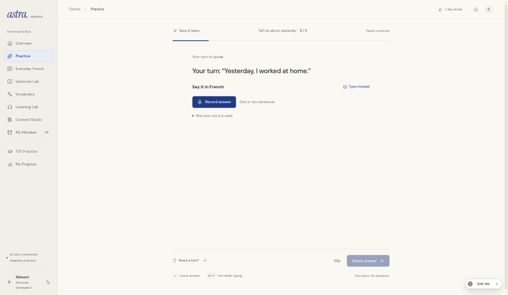
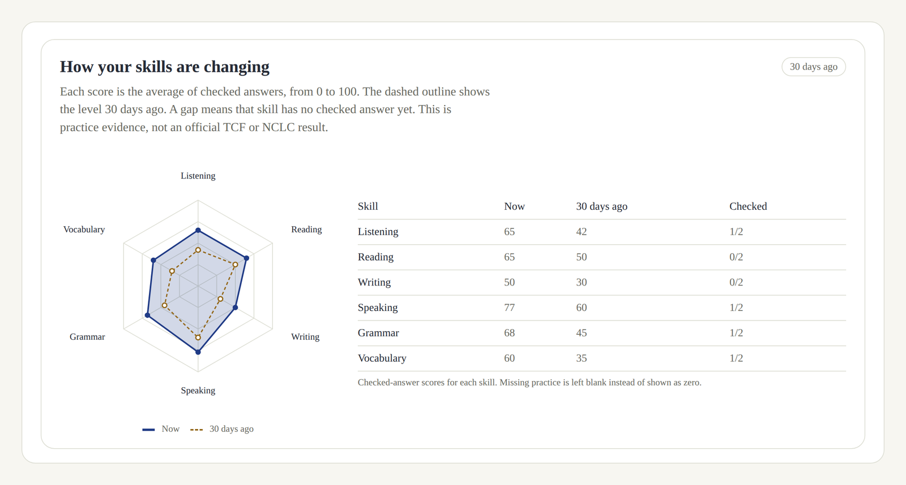
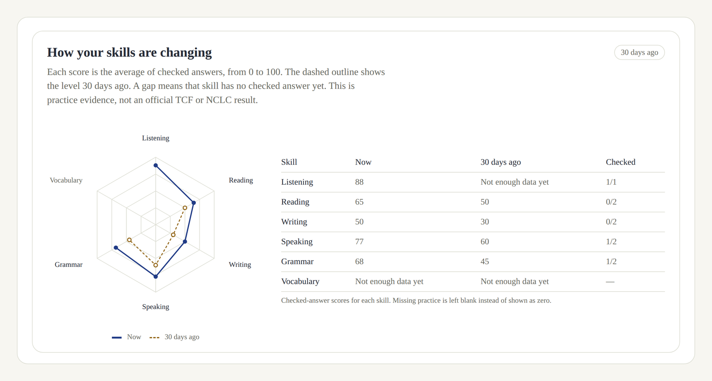
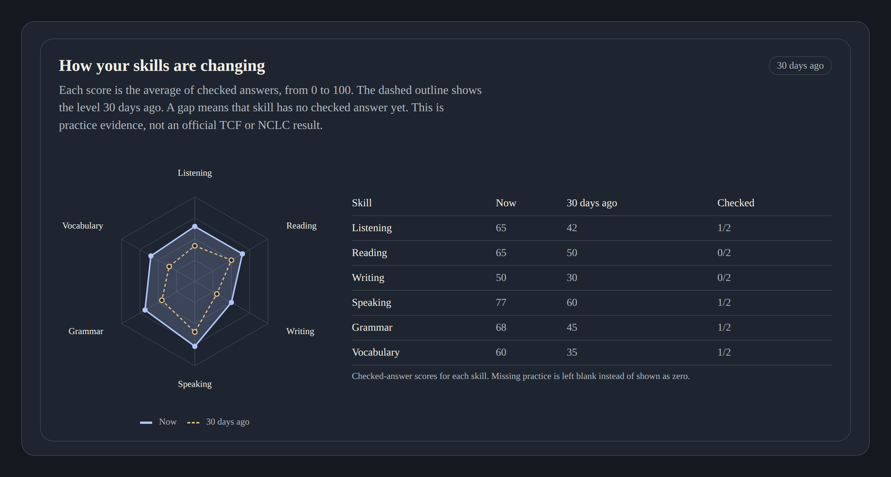
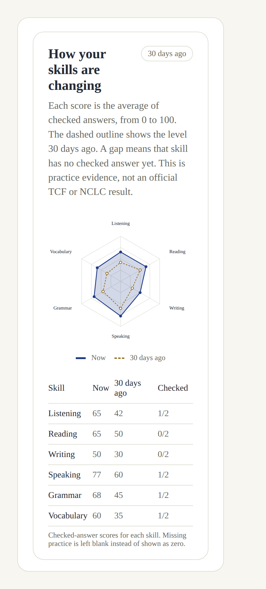

Private beta
Astra: AI tutor for the TCF Canada French exam
An AI French tutor focused on the TCF Canada exam. It gives feedback on writing and speaking, includes listening and reading practice, and tracks progress by skill.
Problem
Most French apps are good at streaks and vocabulary but weak at graded writing and speaking, which is where TCF Canada candidates need the most help. I'm preparing for the same exam, so I built the tool I wanted.
What it does
- AI tutor and feedback loop. Every answer gets checked and comes back as "your answer vs a better answer", with an explanation. The mistakes you make go into a My Mistakes list for review.
- Voice. Listening lab and dictation with recorded French audio, plus speaking turns in a conversation mode (text-to-speech and speech-to-text).
- Skills radar. A six-axis chart covering Listening, Reading, Writing, Speaking, Grammar and Vocabulary. It shows your current score next to your level 30 days ago. Skills with no data show "Not enough data yet" instead of a fake zero, and every score is labelled as practice evidence, not an official TCF or NCLC result.
- Practice areas: TCF Practice hub, Grammar Lab, Listening Lab, Vocabulary, Everyday French, and Content Studio, which turns your own material into practice.
- French-accuracy rules built into the AI prompts. For example, the tutor never teaches "-e = feminine" (rouge, jeune), treats the passé composé as être or avoir, and accepts Quebec forms like "au gym".
Stack
TypeScript, with a database and object storage. An LLM tutor runs through an OpenAI-compatible API, voice is text-to-speech and transcription, and the radar is a plain SVG chart.
My role
Product owner and builder. I designed the product, wrote the specs and acceptance criteria, and ran an honest critical review of my own app (October 2026). Recent merged work includes a trust pass on AI feedback (grammar rules in the prompts, clean feedback text, consistent progress stats, accurate mistake logging) and the skills radar.
Status
Working app in private beta. Sign-in is required and the code repo is private. Next up are TCF-format writing tasks with an estimated NCLC score, a speaking mock exam, and a public landing page with a waitlist. No users or revenue are claimed.









